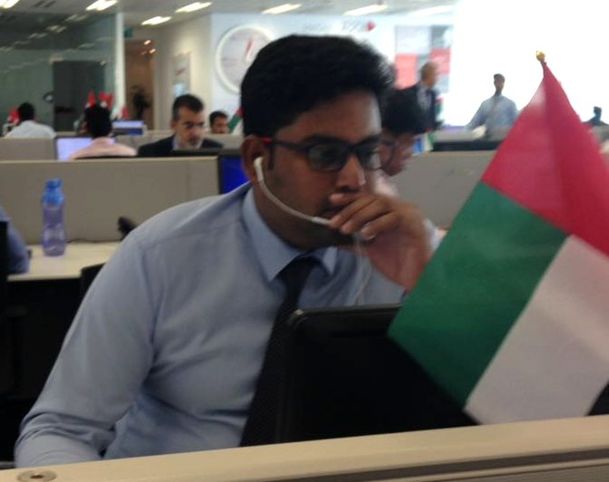
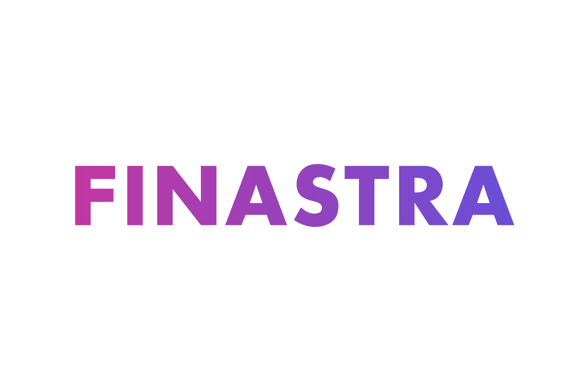

Product Owner / Product Manager · Regulated Banking & Fintech
I translate regulatory complexity into products that people can actually use.
12+ years in banking and fintech — including over a decade owning products end-to-end — delivering compliance-driven digital banking platforms for U.S. Bank, JPMorgan Chase, ADCB, and Mashreq Bank.
Selected Work
Case Studies
All client-identifying visuals are illustrative recreations — real employer/client work stays confidential per NDA.
Privacy & Email Marketing Preferences
One micro-frontend across four channels for 19M+ customers — and a standalone Do-Not-Call page that asks only for what the regulation needs.
Read case study →Banker Experience Evolution
Entitlement-driven navigation redesign across 5 banker personas — cutting redundant configuration and speeding releases.
Read case study →LIBOR→SOFR Regulatory Transition
Owning the benchmark-rate migration backlog across commercial lending platforms in 3 geographies, zero disruptions.
Read case study →Trade Finance Automation — AutoRec
Turning days-long LC/BG document processing into minutes with OCR-based rule validation against ICC/UCP standards.
Read case study →Built by me · Open source
CareerLogic
A working system I use every day, with public code — not a prototype or a mock-up.
Product Thinking
Teardown
Independent analysis of a public product — no NDA, no client ties.
Range, Not Pivot
0→1 Concept
Self-initiated, not client work — a new category, a wedge, a growth loop and a go-to-market plan.
Point of View
Writing
Short pieces on what twelve years of regulated product work has taught me.
Automate volume, not judgment
Trade finance and my own job search taught me the same rule: automate the repetitive work, keep judgment for the exceptions.
Read →Compliance is a product requirement, not a gate
Bringing regulatory conversations into discovery and refinement, instead of a review just before launch.
Read →Building a privacy platform instead of another privacy feature
When investing in a platform makes the next five changes easier than doing the current one as a one-off.
Read →Prioritization is deciding what not to build yet
Regulatory commitments, tech debt and business requests competing for the same capacity — and how to explain what waits.
Read →What colleagues say
In their words
“I had the opportunity to work with Sashank on ADCB, and I was impressed by his strong product thinking, ownership, and ability to collaborate effectively across teams. He consistently brought clarity to complex problems, was dependable in execution, and contributed meaningfully to delivering quality outcomes. It was a pleasure working with him, and I’d gladly recommend him to anyone looking for a thoughtful and reliable product professional.”
Read it on LinkedIn ›
About
Regulated platform delivery, not growth hacking.
I'm a Senior Product Owner / Product Manager who translates regulatory requirements — GLBA, TCPA, FCRA, CAN-SPAM, CALFIPA — into product features and consent workflows. I'm not a growth PM, consumer-app PM, or gaming/social PM: I build for institutions that answer to regulators.

Regulated institutions don't get to ship first and fix compliance later.
The throughline across 12+ years isn't one company or one product — it's the domain. Core banking UAT at Maveric (Citibank, Gulf International Bank) taught me how a single Oracle FLEXCUBE defect ripples through CASA and loan servicing. Digital banking optimization at ValueLabs, onshore in Abu Dhabi, taught me what it means to deliver product change inside a live retail bank's operational rhythm. Trade finance automation at Gradmener (Mashreq Bank) taught me that "automate it" is a real question, not a default — OCR extraction still had to answer to ICC/UCP 600 and SWIFT message validation, not the other way around. Commercial cards workflow at Mphasis (JPMorgan Chase) was my first sustained Salesforce ownership. And at Cognizant since 2021 — across JPMorgan Chase's LIBOR-to-SOFR transition, Fiserv's alerts & controls migration, and now U.S. Bank's privacy and banker-experience platforms — the pattern held.
I'm CSPO certified, with additional training in Digital Product Management (University of Virginia) and product analytics (Pendo Academy), and since 2022 I've also been a reporting-line manager — today for six senior consultants — alongside my product work. What's next: Senior, Lead, or Principal Product Owner roles — and selectively, Senior Product Manager roles — in regulated banking, fintech, and compliance-driven platforms. Open to Hyderabad/Bengaluru onsite, India-remote, or international relocation.
Toolkit
Skills & Domains
Twelve years across product, regulation and delivery in regulated banking.
Product ownership
- Product vision & roadmap
- OKRs & KPIs
- Backlog prioritization
- User stories & acceptance criteria
- GTM alignment
Regulation & compliance
- GLBA · TCPA · FCRA
- CAN-SPAM · CALFIPA
- Consent management
- Audit traceability
- Regulatory change
Banking domains
- Digital banking
- Privacy & marketing preferences
- Commercial lending
- Trade finance (LC / BG)
- Core banking
Delivery & leadership
- Scrum & SAFe
- UAT & SIT coordination
- Release planning
- Senior stakeholder management
- Managing 6 senior consultants
Discovery, data & AI
- Process modelling (BPMN)
- Wireframing & prototyping
- Tableau & Power BI
- Product analytics
- AI-assisted building
Hands-On With
Tools
Real vendor logos throughout — including the platforms behind LoanIQ, ACBS, SafeWatch, and OmniFlow, credited to their actual owners below.
 Jira
Confluence
Jira
Confluence
 Salesforce
Salesforce
 Tableau
Tableau
 Power BI
Power BI
 Figma
Mural
Oracle FLEXCUBE
Figma
Mural
Oracle FLEXCUBE
 Splunk
Splunk
 Swagger
Swagger

LoanIQ (Finastra) ACBS (FIS)
SafeWatch (Eastnets)
OmniFlow (Newgen)
SQLSQL
BPMNARIS / BPMN
ACBS (FIS)
SafeWatch (Eastnets)
OmniFlow (Newgen)
SQLSQL
BPMNARIS / BPMN
Get In Touch
Let's talk about a role.
Open to Hyderabad/Bengaluru onsite, India-remote, or international relocation. Fastest way to reach me is email.